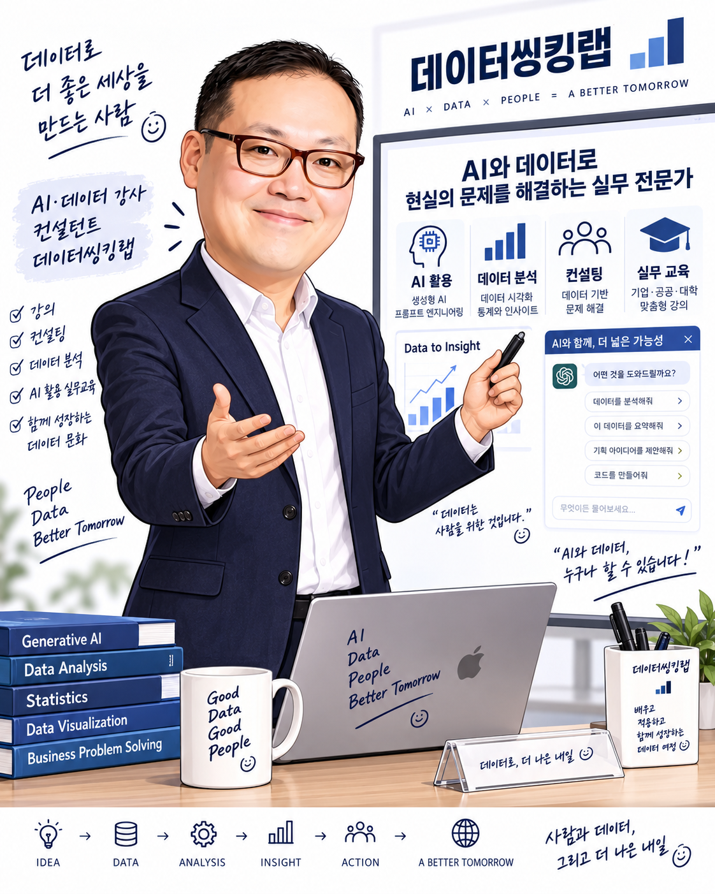

AX 전략 · 경영 자문
경영진의 AI 전환 방향과 우선 과제를 정리하고, 실행 로드맵과 조직 변화 관리를 지원합니다.
통계학 박사 · AI·데이터 전략 컨설턴트 · AX 자문역
데이터와 AI를 경영의 질문, 업무의 변화, 사람의 실행으로 연결합니다. 20년 이상의 데이터사이언스·AI/ML 실무 경험을 바탕으로 기업의 AI 활용과 데이터 기반 문제 해결을 돕습니다.
AI × DATA × PEOPLE = A BETTER TOMORROW

데이터·AI 실무 경력
컨설팅·자문 수행
기업·기관 강의 이력
첨부 프로필 기준 · 2026.10.27
경영진의 AX 방향 설정부터 부서의 실무 활용, 데이터 분석과 모델 개발까지 이어지는 경험을 교육에 담습니다.
경영진의 AI 전환 방향과 우선 과제를 정리하고, 실행 로드맵과 조직 변화 관리를 지원합니다.
기업의 업무를 진단하고 AI 적용 과제를 발굴하며, 현업에서 실행할 도입·활용 방안을 구체화합니다.
카드·유통 데이터 분석과 고객 인사이트 도출, 데이터 플랫폼 기획을 통해 의사결정을 돕습니다.
추천·수요예측·이탈예측 모델 경험과 생성형 AI 활용, 데이터 시각화, 업무 자동화 교육을 연결합니다.
유통·금융·제조·바이오 등 다양한 산업에서 데이터와 AI를 활용한 경영 과제를 수행했습니다.
미트박스글로벌 AX 컨설팅 자문역
AI Advisor · 2026.01~
Aify Service Group Leader
CCO / AI & Data Advisor · 경영컨설팅
데이터사이언스센터장 · CIO/CDO
데이터사이언스부문장 · CDO/상무보
Team Leader · 데이터 컨설팅
책임 컨설턴트
미트박스글로벌의 경영진 파트너로서 전사 AX 전략과 현업 AI 활용 과제의 실행을 자문합니다.
하이퍼라운지에서 카카오모빌리티, 동구바이오제약 등 7개사를 대상으로 사업 진단과 데이터·AI 활용 전략 수립을 수행했습니다.
AI확산센터에서 비츠로넥스텍, 징코스테크날로지 등 6개사의 업무 진단과 AI 적용 과제 발굴을 수행했습니다.
현대카드에서 이마트, 스타벅스, 현대·기아자동차 등 7개사를 대상으로 카드 결제 데이터 기반 컨설팅을 수행했습니다.
첨부 프로필에 수록된 강의 중 대표 이력입니다. 교육 대상의 역할과 실제 업무에 맞춰 AI와 데이터를 적용하는 방법을 다룹니다.
강사와 교육·컨설팅 활동에 대한 자세한 소개는
Data Thinking Lab 홈페이지에서 확인하세요.